The intersection of art & technology.
The blur between the digital & real.
Here's a complete guide for using Processing & Arduino.
As innovators, the most common error could be to neglect viability. Creative processes tend to take charge of our actions, but when push comes to shove, we need to get our hands dirty to make our vision a reality. If you have several ideas in mind but haven't started working on any of them yet, then don't. First, take a peak at a few other projects going on around the world. You might even begin to think about ideas that you've never even thought of before!
Augmented City: AR technology in an urban environment
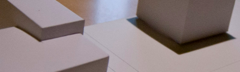 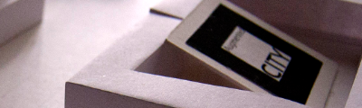 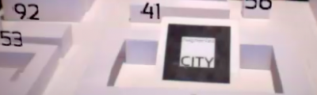{kind=link}
{kind=link}
{kind=link}
Author: Michael Jihoon Sun
Input type: Visual
Platforms: Processing
Source: MichaelJSun.com
Description: Add a contextual layer of digital information and superimpose it on top of the image of the world. With augmented reality technology, individuals can do this today by utilizing the live view through the lens of a camera.
Chronotape: Tangible timeline for family history
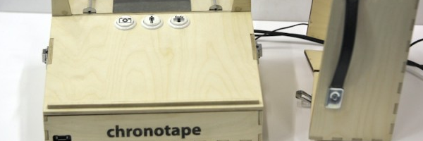 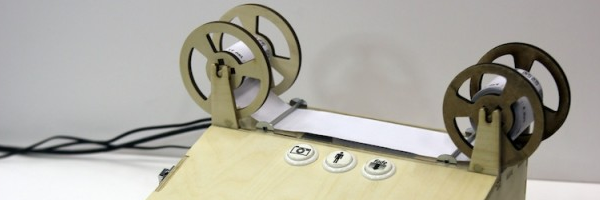 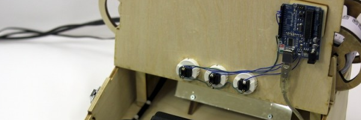{kind=link}
{kind=link}
{kind=link}
Author: Peter Bennett
Input type: Tactile
Platforms: Processing + Arduino
Source: CreativeApplications.net
Description: Inspired by reel-to-reel tape machines, microfilm, cine-film projectors and arcade games, Chronotape is a tangible timeline for family history research designed by Peter Bennett and developed as part of the PATINA project, within the Bristol Interaction & Graphics group.
Sound Machines: An instrument for performing electronic music
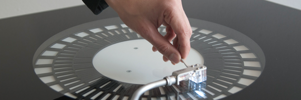 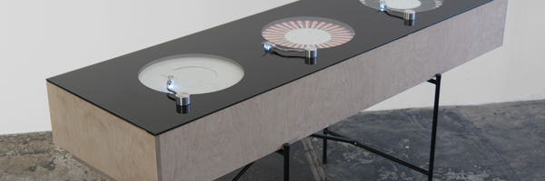{kind=link}
{kind=link}

Author: TheProduct
Input type: Auditory
Platforms: Processing + Arduino
Source: The-Product.org
Description: Three units, which are resembling standard record players, translate concentric visual patterns into control signals for further processing in any music software. The rotation of the discs, each holding three tracks, can be synced to a sequencer.
Pulse Mirror: Make interactive visuals with your pulse rate
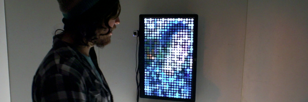 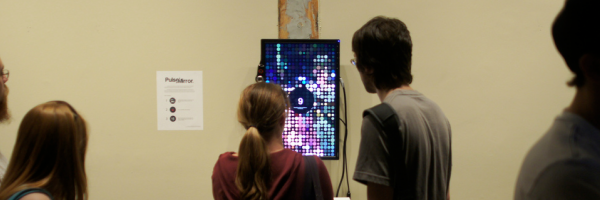 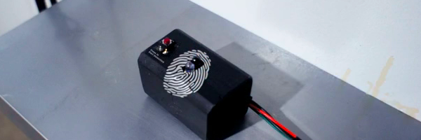{kind=link}
{kind=link}
{kind=link}
Author: Chris Lee & Henry Chang
Input type: Tactile
Platforms: Processing + Arduino
Source: CreativeApplications.net
Description: PulseMirror is an interactive installation device that collects and translates participants' pulse rate into a mirrored visual image. The mirror image is created by a series of circles that pulsate heart rate data collected from different participants.
Computerless Arduino: Changing code through a dynamic interface
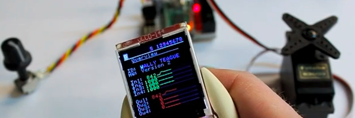 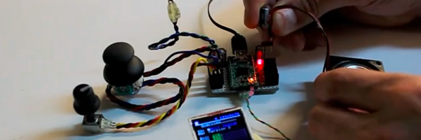 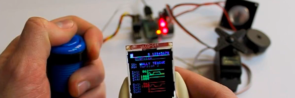{kind=link}
{kind=link}
{kind=link}
Author: Teague Labs
Input type: Tactile
Platforms: Arduino
Source: Labs.Teague.com
Description: Latest from the Teague Labs comes in the form of Computerless Arduino, small, inexpensive visual interface for Arduino that doesn't require a computer to change the code, so you can take it with you and make awesome things anywhere.
Daiku: Noise-responsive visual animation
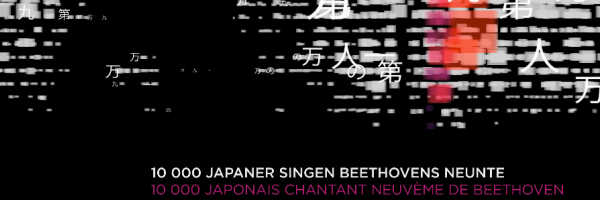 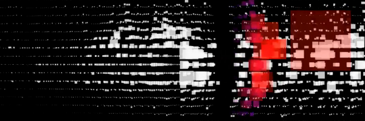 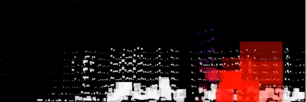{kind=link}
{kind=link}
{kind=link}
Author: Marc Tiedemann
Input type: Auditory
Platforms: Processing
Source: Marc-Tiedemann.de
Description: Marc Tiedemann got asked to come up with an animations for the documentary "DAIKU | 10000 Japaner singen Beethovens Neunte". They required a main title and graphics within the movie. Friedemann Hottenbacher, the director of the piece, showed him the work of Malinowski which turned out to be the key inspiration for the graphics.